Large-scale commercial campaigns designed and executed as
full visual systems across digital, print, and physical retail.
At Baltic Data, seasonal campaigns operate as
interconnected commercial systems – spanning web, paid media,
email, in-store screens, print, and physical retail architecture.
I lead visual direction and execution end-to-end, translating
strategic goals into scalable visual identities.
RoleVisual Direction · Campaign Systems
ScopeStrategy → System → Execution
ChannelsDigital · Paid · Email · Print · Retail
Scale18 retail stores + Digital media
Black Friday
Concept · 3D · Motion · Digital · In-store
Black Friday is Baltic Data's most competitive sales period, requiring
instant attention across physical retail and digital platforms.
I developed the full campaign visual identity and executed it end-to-end —
from 3D concept and motion to in-store screens, web, paid media, email,
and print.
The animated 3D visual shown here was deployed across digital screens in
all 18 Baltic Data retail stores, designed to capture attention from
passing foot traffic in shopping malls during Black Friday week.
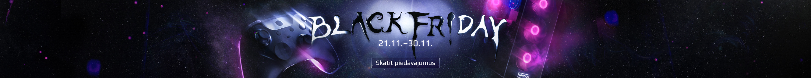
This campaign ranked among Baltic Data's top 6 highest-performing Meta
campaigns of all time, based on click performance across more than five
years of advertising data.
Vertical email designs adapted from the Black Friday visual system.
Christmas
Concept · Illustration · 3D · Digital · In-store
The Christmas campaign required a warm, story-driven visual identity
flexible enough to live across digital platforms and physical retail
spaces.
I designed and executed the full campaign plan and visual system, including a custom 3D illustration
that became the foundation for all media, digital and print.
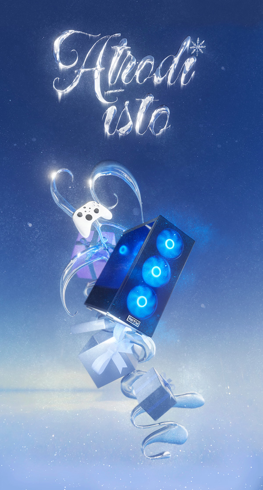
The custom 3D illustration served as the central visual anchor, adapted
across web, landing pages, email, paid media, and large-format in-store
applications.
In addition to digital placements, I produced large-scale printed security gate wraps installed across retail stores – an amazing opportunity to see
a 3D illustration translated directly into physical retail architecture.
The campaign is currently active across stores and digital channels.
Performance data is still being collected.
Back to School
Concept · Visual Identity · Digital · Print · Execution
Back to School is a multi-brand sales campaign requiring a flexible
visual system that can scale across products, formats, and retail
environments.
I developed a custom typographic identity and executed the campaign
across digital, paid media, print, and in-store placements.
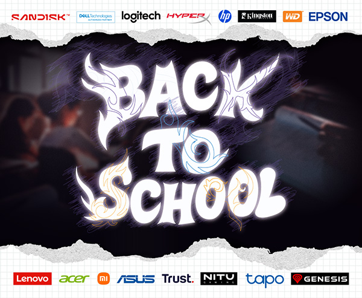
I developed a custom typographic concept that became the core visual identity
of the campaign and served as the foundation for all executions.
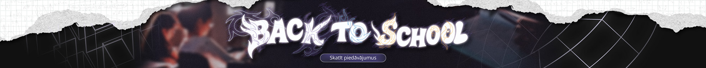
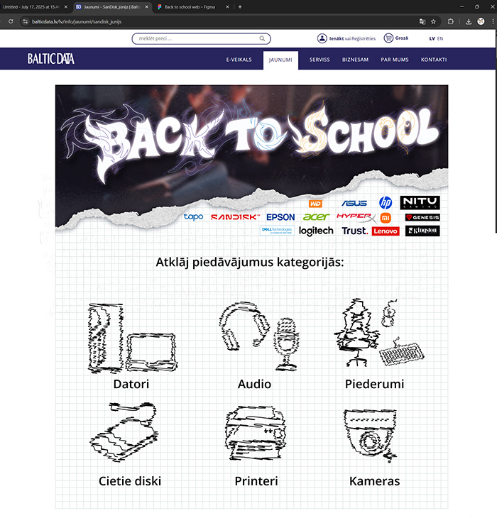
The homepage banner connected to a redesigned campaign landing page with
clearer category navigation and stronger calls to action. I introduced a new
modular landing page structure, replacing static visuals with interactive,
CMS-driven layouts.
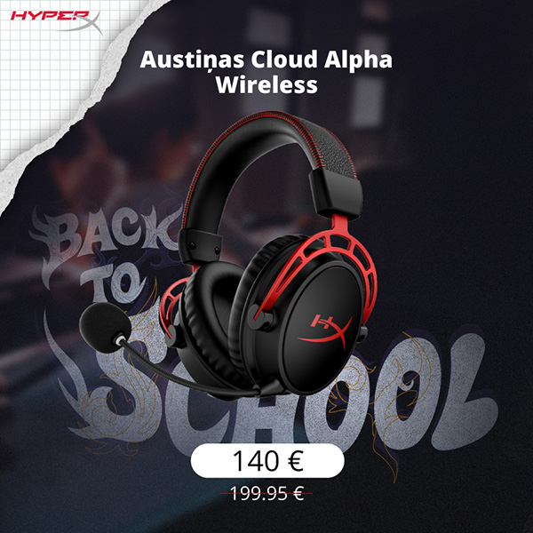
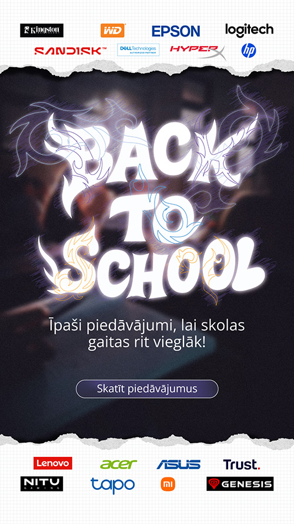
META ads were adapted from the same visual system, including product cards
and story formats optimised for performance.
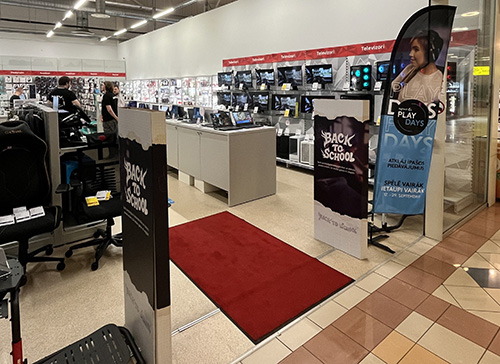
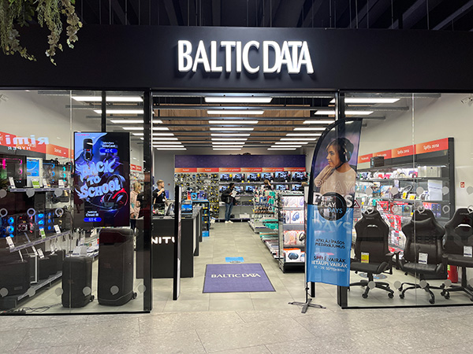
Along all digital media the campaign was rolled out across 18 retail stores, combining print materials, physical
security gate designs and digital in-store screens.
This execution delivered 2.5× stronger performance compared to previous
iterations of the campaign.
Partner Campaigns
Campaign Adaptation · Digital · Email · Paid Media
Alongside large seasonal campaigns, I run frequent
brand-specific promotions. I handle visual identity and execution end-to-end,
across web, mobile, email, and paid media.
HyperX
The HyperX campaign highlighted special deals. I used bold,
high-contrast visuals adapted across multiple formats. Formats included web banners, Meta ads, landing page design and functionality and a promo e-mail.
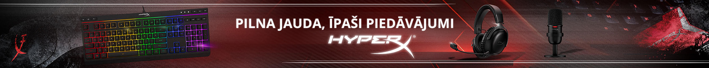
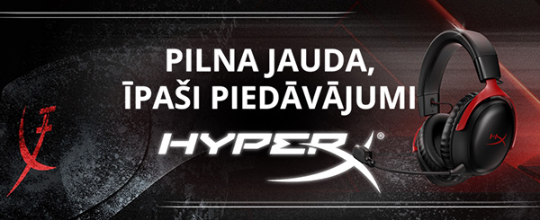
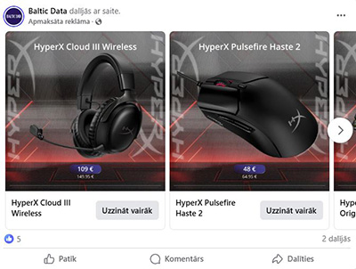
META ad formats including product cards and carousel ads.
Logitech
A promotional campaign showcasing Logitech's deals with modern,
clean, product-focused visuals adapted for web and mobile formats.
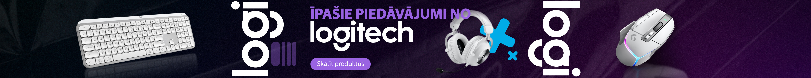
Desktop homepage banner design optimized for wide-screen displays.
Mobile banner designed for vertical and horizontal viewing with safe-space in mind.
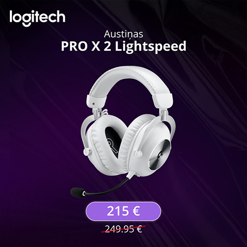
Product card ads for META platforms, designed for feed-based discovery
and optimized for click-through performance.